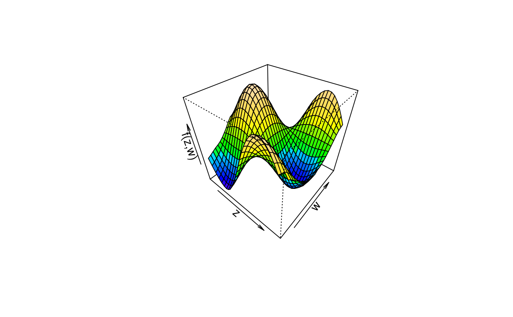

plot3d.RdFunction to plot 3D graphics or image and/or contour plots for bivariate effects/functions.
plot3d(x, residuals = FALSE, col.surface = NULL,
ncol = 99L, swap = FALSE, col.residuals = NULL, col.contour = NULL,
c.select = NULL, grid = 30L, image = FALSE, contour = FALSE,
legend = TRUE, cex.legend = 1, breaks = NULL, range = NULL,
digits = 2L, d.persp = 1L, r.persp = sqrt(3), outscale = 0,
data = NULL, sep = "", shift = NULL, trans = NULL,
type = "mba", linear = FALSE, extrap = FALSE,
k = 40, ...)A matrix or data frame, containing the covariates for which the effect should be plotted
in the first and second column and at least a third column containing the effect. Another
possibility is to specify the plot via a formula,
e.g. for simple plotting of bivariate surfaces z ~ x + y, see the examples.
x may also be a character file path to the data to be used for plotting.
If set to TRUE, residuals may also be plotted if available. Residuals must
be supplied as an attribute named "residuals", which
is a matrix or data frame where the first two columns are covariates and the third column
the residuals.
The color of the surface, may also be a function, e.g.
col.surface = heat.colors.
the number of different colors that should be generated, if col.surface is a
function.
If set to TRUE colors will be represented in reverse order.
The color of the partial residuals, or if contour = TRUE the color of the
contour lines.
The color of the contour lines.
Integer vector of maximum length of columns of x, selects the
columns of the resulting data matrix that should be used for plotting. E.g. if x has 5
columns, then c.select = c(1, 2, 5) will select column 1, 2 and 5 for plotting.
If c.select = 95 or c.select = 80, function plot3d will search for the
corresponding columns to plot a 95\(\%\) or 80\(\%\) confidence surfaces respectively. Note
that if e.g. c.select = c(1, 2), plot3d will use columns 1 + 2 and 2 + 2 for
plotting.
The grid size of the surface(s).
If set to TRUE, an image.plot is drawn.
If set to TRUE, a contour plot is drawn.
If image = TRUE an additional legend may be added to the plot.
The expansion factor for the legend text, see text.
A set of breakpoints for the colors: must give one more breakpoint than
ncol.
Specifies a certain range values should be plotted for.
Specifies the legend decimal places.
See argument d in function persp.
See argument r in function persp.
Scales the outer ranges of x and z limits used for interpolation.
If x is a formula, a data.frame or list. By default the
variables are taken from environment(x): typically the environment from which
plot3d is called. Note that data may also be a character file path to the data.
The field separator character when x or data is a character, see function
read.table.
Numeric constant to be added to the smooth before plotting.
Function to be applied to the smooth before plotting, e.g., to transform the plot to the response scale.
Character, which type of interpolation method should be used. The default is
type = "akima", see function interp. The two other options are
type = "mba", which calls function mba.surf of package MBA, or
type = "mgcv", which uses a spatial smoother withing package mgcv for interpolation.
The last option is definitely the slowest, since a full regression model needs to be estimated.
Logical, should linear interpolation be used withing function
interp?
Logical, should interpolations be computed outside the observation area (i.e., extrapolated)?
Integer, the number of basis functions to be used to compute the interpolated surface
when type = "mgcv".
Parameters passed to colorlegend if an image plot with legend is drawn,
also other graphical parameters, please see the details.
For 3D plots the following graphical parameters may be specified additionally:
cex: Specify the size of partial residuals,
col: It is possible to specify the color for the surfaces if se > 0, then
e.g. col = c("green", "black", "red"),
pch: The plotting character of the partial residuals,
...: Other graphical parameters passed functions persp,
image.plot and contour.
Function plot3d can use the akima package to construct smooth interpolated
surfaces, therefore, package akima needs to be installed. The akima package has an ACM
license that restricts applications to non-commercial usage, see
https://www.acm.org/publications/policies/software-copyright-notice
Function plot3d prints a note referring to the ACM license. This note can be suppressed by
setting
options("use.akima" = TRUE)
## Generate some data.
set.seed(111)
n <- 500
## Regressors.
d <- data.frame(z = runif(n, -3, 3), w = runif(n, 0, 6))
## Response.
d$y <- with(d, 1.5 + cos(z) * sin(w) + rnorm(n, sd = 0.6))
if (FALSE) ## Estimate model.
b <- bamlss(y ~ s(z,w), data = d)
summary(b)
#> Error in summary(b): object 'b' not found
## Plot estimated effect.
plot(b, model = "mu", term = "s(z,w)")
#> Error in h(simpleError(msg, call)): error in evaluating the argument 'x' in selecting a method for function 'plot': object 'b' not found
## Extract fitted values.
f <- fitted(b, model = "mu", term = "s(z,w)", intercept = FALSE)
#> Error in fitted(b, model = "mu", term = "s(z,w)", intercept = FALSE): object 'b' not found
f <- cbind(d[, c("z", "w")], f)
#> Error in data.frame(..., check.names = FALSE): object 'f' not found
## Now use plot3d().
plot3d(f)
#> Error in plot3d(f): object 'f' not found
plot3d(f, swap = TRUE)
#> Error in plot3d(f, swap = TRUE): object 'f' not found
plot3d(f, grid = 100, border = NA)
#> Error in plot3d(f, grid = 100, border = NA): object 'f' not found
## Only works if columns are named with
## '2.5
plot3d(f, c.select = 95, border = c("red", NA, "green"),
col.surface = c(1, NA, 1), resid = TRUE, cex.resid = 0.2)
#> Error in plot3d(f, c.select = 95, border = c("red", NA, "green"), col.surface = c(1, NA, 1), resid = TRUE, cex.resid = 0.2): object 'f' not found
## Now some image and contour.
# plot3d(f, image = TRUE, legend = FALSE)
# plot3d(f, image = TRUE, legend = TRUE)
# plot3d(f, image = TRUE, contour = TRUE)
# plot3d(f, image = TRUE, contour = TRUE, swap = TRUE)
# plot3d(f, image = TRUE, contour = TRUE, col.contour = "white")
# plot3d(f, contour = TRUE)
# plot3d(f, image = TRUE, contour = TRUE, c.select = 3)
# plot3d(f, image = TRUE, contour = TRUE, c.select = "Mean")
# plot3d(f, image = TRUE, contour = TRUE, c.select = "97.5
## Variations.
d$f1 <- with(d, sin(z) * cos(w))
with(d, plot3d(cbind(z, w, f1)))
## Same with formula.
plot3d(sin(z) * cos(w) ~ z + w, zlab = "f(z,w)", data = d)
plot3d(sin(z) * cos(w) ~ z + w, zlab = "f(z,w)", data = d,
ticktype = "detailed")
## Play with palettes.
plot3d(sin(z) * cos(w) ~ z + w, col.surface = heat.colors, data = d)
plot3d(sin(z) * cos(w) ~ z + w, col.surface = topo.colors, data = d)

plot3d(sin(z) * cos(w) ~ z + w, col.surface = cm.colors, data = d)
plot3d(sin(z) * cos(w) ~ z + w, col.surface = rainbow, data = d)
plot3d(sin(z) * cos(w) ~ z + w, col.surface = terrain.colors, data = d)
plot3d(sin(z) * cos(w) ~ z + w, col.surface = rainbow_hcl, data = d)
plot3d(sin(z) * cos(w) ~ z + w, col.surface = diverge_hcl, data = d)
plot3d(sin(z) * cos(w) ~ z + w, col.surface = sequential_hcl, data = d)
plot3d(sin(z) * cos(w) ~ z + w,
col.surface = rainbow_hcl(n = 99, c = 300, l = 80, start = 0, end = 100),
data = d)
# plot3d(sin(z) * cos(w) ~ z + w,
# col.surface = rainbow_hcl(n = 99, c = 300, l = 80, start = 0, end = 100),
# image = TRUE, grid = 200, data = d)